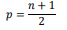

|
Propiedades básicas del árbol 1. El número de vértices de un árbol binario T es impar.  Demostremos a continuación la propiedad (2). Si p es el número de vértice pendientes y el árbol binario T tiene n vértices, entonces, el número de vértices de grado 3 es n - p - 1. Como T posee n - 1 aristas, se tiene que p+3(n – p - 1) + 2 = 2 (n – 1), y resolviendo esta ecuación se obtiene que p= (n+1)/2 (1) |
Arboles
Propiedades básicas del árbol
Obra publicada con Licencia Creative Commons Reconocimiento Compartir igual 4.0